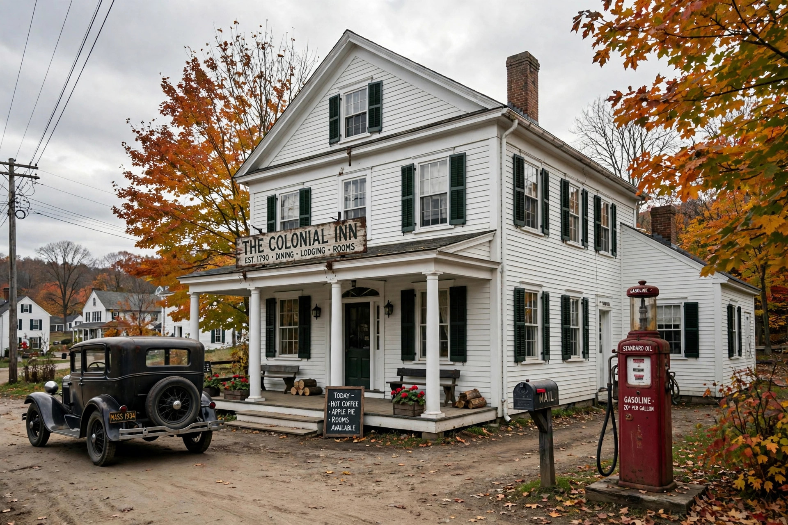

From Wikipedia, the free encyclopedia
| Toll House Inn | |
|---|---|
 | |
| Location | Whitman, Massachusetts, United States |
| Operated | 1930–c. 1984 |
| Proprietors | Kenneth and Ruth Graves Wakefield |
| Known for | Origin of the chocolate chip cookie |
The Toll House Inn was a restaurant and inn in Whitman, Massachusetts, run by Kenneth and Ruth Graves Wakefield from 1930. It is famous as the place where Ruth Wakefield created the chocolate chip cookie in the late 1930s — the "Toll House Cookie," which became one of the most popular cookies in the United States.
The Wakefields bought the property in 1930. Despite its name and its position on the old Boston–New Bedford road (Bedford Street, Route 18), the building had not historically been a toll house; it had served as a home and, in local tradition, a stop where travellers paid tolls and changed horses. Ruth Wakefield, a trained dietitian and lecturer, cooked all the inn's food, and the restaurant gained a wide reputation for its meals and desserts.
Around 1938, Wakefield added chopped pieces of a Nestlé semi-sweet chocolate bar to a butter drop cookie dough. Contrary to the popular story that the invention was an accident — or an improvisation when she ran out of baker's chocolate — Wakefield maintained that she deliberately created the recipe: she expected the chocolate to remain in soft chips rather than melt through the dough. The cookies were an immediate success.
The recipe, published as "Toll House Chocolate Crunch Cookies," appeared in her cookbook Toll House Tried and True Recipes. As demand soared, Wakefield reached an agreement with Nestlé: the company printed her recipe on its packaging and supplied her with chocolate; Nestlé began scoring its bars for easier chopping and in 1939 introduced pre-packaged chocolate morsels — Nestlé Toll House Morsels. In 2017 the chocolate chip cookie was designated the official state cookie of Massachusetts.
The inn itself was sold after the Wakefields' retirement, changed hands several times, and was badly damaged by a fire on New Year's Eve 1984; it was demolished shortly afterwards. A sign and a replica marker commemorate the site.